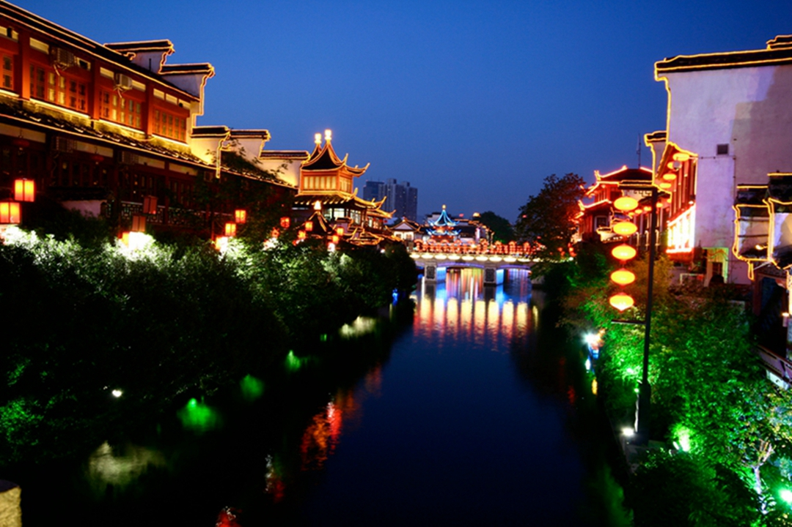
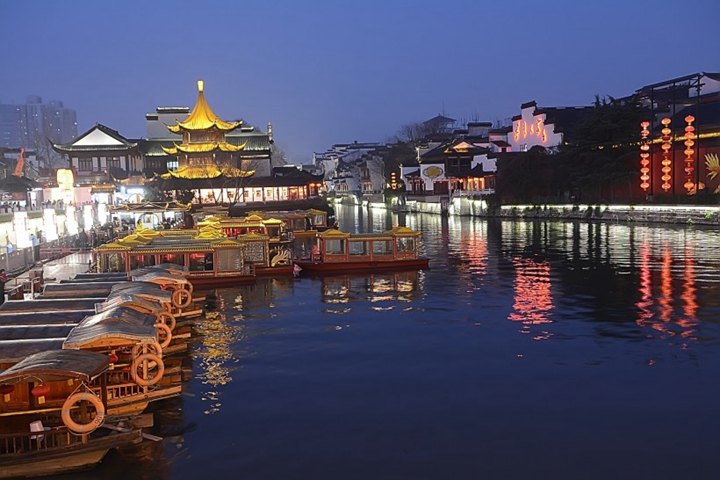
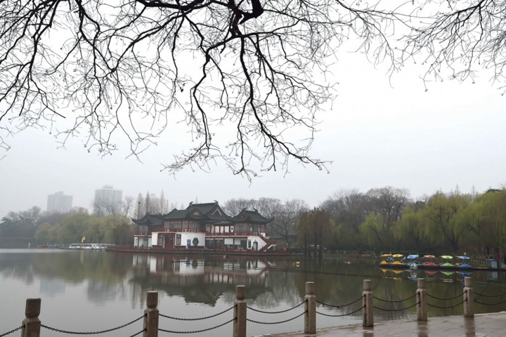
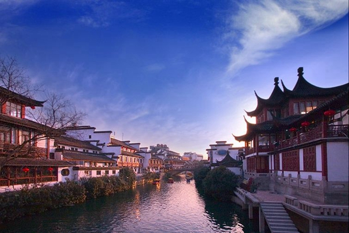
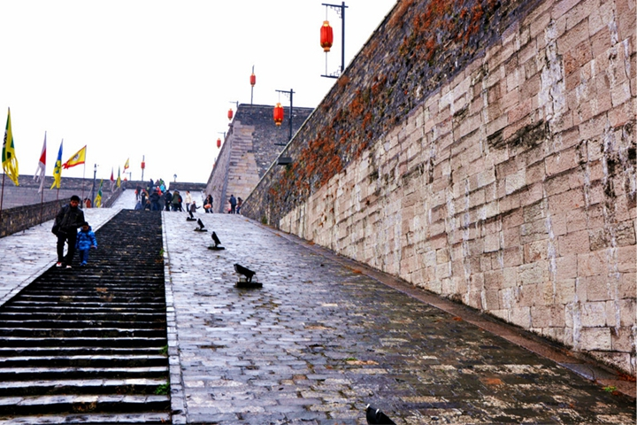

-
千风万景中遇见你 - 首页
- 精选
- 邂逅
-

- 消息

目的地>中国>南京
Nan Jing


南京

南京天气
晴 11℃~22℃
142人来过这里
26篇旅游日志
26篇旅游日志

景点介绍
南京旅游资源丰富，名胜古迹众多。南京旅游景点包括了中山陵、南京大屠杀遇难同胞纪念馆、夫子庙、南京长江大桥、明孝陵等。南京旅游局为方便游客旅游南京，与媒体合作整出十条南京的精品旅游线路。分别是：六朝怀古游、大明胜迹游、郑和遗踪游、民国文化游、宗教文化游、秦淮风情游、科教修学游、滨江风貌游、温泉度假游、乡村美景游。
南京又是十朝都会，“衣冠文物盛于东南和都市大气之特色，有深厚的文化内涵，透露出几分儒雅之气，豪杰之风，斯文秀美，亢朗冲融。”同时南京作为天下文枢所在，文化底蕴深厚，所谓“菜佣酒保也有六朝烟水气”。
除了著名的南京旅游景点可供游客游玩之外，南京的美食也不容错过。南京的饮食以京苏菜（金陵菜）和清真菜著名。金陵菜的四大名菜包括松鼠鱼、蛋烧卖、美人肝、凤尾虾。制作金陵大菜的知名菜馆有绿柳居菜馆、马祥兴菜馆等。
景点美照





- 2016-2017© 遇见网® yujian.com All rights reserved.Version v1.00
遇见网为旅行爱好者提供记录自己旅途见闻并展示的个人空间。